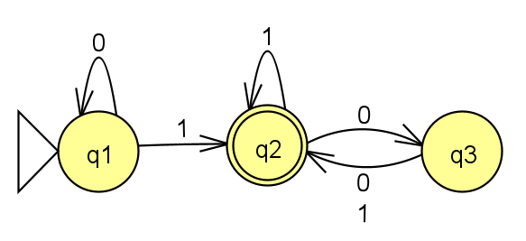
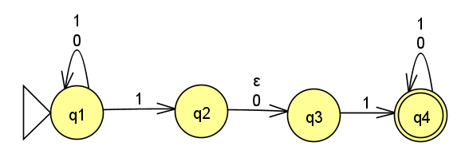
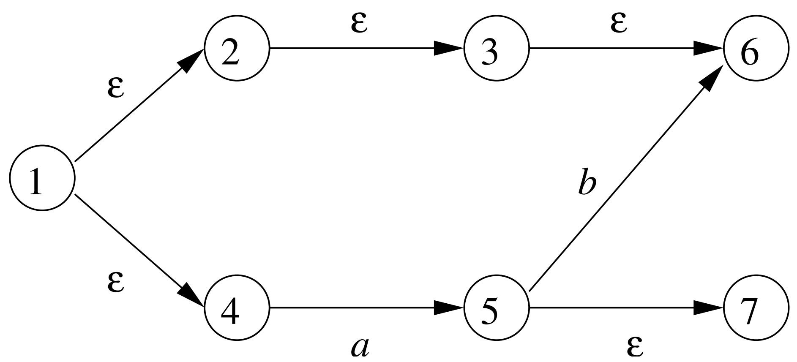

Homework 4
Last updated: Fri, 8 Mar 2024 18:42:39 -0500
Out: Mon Mar 04, 12:00pm EST (noon) Due: Mon Mar 18, 12:00pm EST (noon)
This assignment explores regular expressions and inductive proofs.
Homework Problems
Regular Languages Closed Under Kleene Star? (10 points)
Regular Expression Exercises (2 * 6 = 12 points)
Induction Practice (9 points)
Proof by Induction Involving Regular Expressions (6 + 6 = 12 points)
README (1 point)
Total: 44 points
Submitting
Submit your solution to this assignment in Gradescope hw4. Please assign each page to the correct problem and make sure your solutions are legible.
A submission must also include a README containing the required information.
1 Regular Languages Closed Under Kleene Star?
In class we learned about the Kleene star operation on languages:
A^*=\left\{x_1x_2\ldots x_k\mid k\geq 0\textrm{ and each }x_i\in A\right\}
This problem asks you to prove that the set of regular languages is closed under the Kleene star operation. Specifically:
Give the equivalent IF-THEN statement that must be proved.
- Give a proof of this IF-THEN statement.
The proof must be in the form of a Statements and Justifications Table.
If the proof needs a machine-language "Equivalence Table" (e.g., to "prove" that a machine recognizes some language) the table must include at least two example strings, one in the language and one not in the language. Also, each line of the table needs a justification.
Finally, the proof must start with DFA representation of some regular language L, and that DFA must be transformed into an NFA for L^* without using \textrm{convert} from Homework 3 Problem Equivalent Machines.
2 Regular Expression Exercises
(2 points each)
Below are some languages (their alphabet \Sigma is as indicated) or machines that we have previously seen in this course.
Come up with regular expressions that either describe the given language, or is equivalent to the given machine:
\left\{w\mid w\textrm{ has an odd number of }\texttt{1}s\right\},
\Sigma = \left\{\texttt{0},\texttt{1}\right\}
\left\{w\mid w\textrm{ has exactly three }\texttt{1}s\right\},
\Sigma = \left\{\texttt{0},\texttt{1}\right\}
\left\{w\mid w\textrm{ is a three-digit number representing a 400-level course}\right\},
\Sigma = \left\{\texttt{0,1,2,3,4,5,6,7,8,9}\right\}
The DFA:

The NFA:

The NFA:

(State 1 is the start state)
In addition to the regular expressions that are allowed by the formal definition of regular expressions, your answers may also use the following regular expression shorthands when convenient:
\Sigma means "any single symbol" from the alphabet.
For example, if the alphabet is \Sigma = \left\{\texttt{0},\texttt{1}\right\}, then the regular expression \Sigma is shorthand for \texttt{0} \cup \texttt{1}
\texttt{+} means "1 or more of the preceding regular expression".
For example, the regular expression \texttt{0+} is shorthand for \texttt{00}^*
3 Induction Practice
Prove that the following statement is true:
\sum_{i=1}^n i^2 =\frac{n(n+1)(2n+1)}{6}
Use induction on one of the natural numbers in the equation.
which value the induction is "on",
base case(s) (Note: it might not be zero?),
and inductive case(s) (where each includes an inductive hypothesis)
In addition, the proof of each case should be clearly explained with a Statements and Justifications table, as described in class.
4 Proof by Induction Involving Regular Expressions
In lecture, when proving the statement:
\textrm{A language } L\textrm{ is a regular language } \textrm{ if and only if } \textrm{ there is a regular expression that describes } L
in the proof of the reverse direction, we sketched out a conversion function, call it \textrm{RegExpr2NFA}, that given any regular expression as input, converts it to an equivalent NFA.
For this problem, you must do two things (6 pts each, 1 for each regular expression case):
Write out the full, recursive definition of the \textrm{RegExpr2NFA} function. Its cases and recursive parts should exactly follow the cases and recursive parts in the formal definition of regular expressions.
Further, if you need to write out an NFA, it should be a formal description. (You may assume that the alphabet of L is \Sigma.) Finally, you may assume and use in your definition additional functions \textrm{UNION}_\textsf{NFA}, \textrm{CONCAT}_\textsf{NFA}, and \textrm{STAR}_\textsf{NFA}, which correspond to the NFA combination operations we defined together in lecture when proving that these operations are closed.
Prove that the conversion performed by \textrm{RegExpr2NFA} is "correct".
Specifically, answer the following questions:
When we say that two things (e.g., a regular expression and an NFA) are equivalent in this course, what does this mean?
Now, given a meaning for equivalent, we can say that the conversion function \textrm{RegExpr2NFA} is "correct" if its input and output are equivalent. Give a formal (equality) statement for this notion of "correctness".
Prove the statement that you came up with.
The proof should be a proof by induction on the definition of a regular expression (make sure to say the name of the specific regular expression that the induction is "on").
Thus, a full proof would follow the recursive definition of regular expressions and should have 6 parts: 3 base cases and 3 recursive cases.
Note: You only need to prove the statement for one base case and one recursive case (your choice).
Make sure that each recursive case declares and uses as many inductive hypothesis assumptions as needed.
Also, make sure all proofs are given in a Statements and Justifications Table.